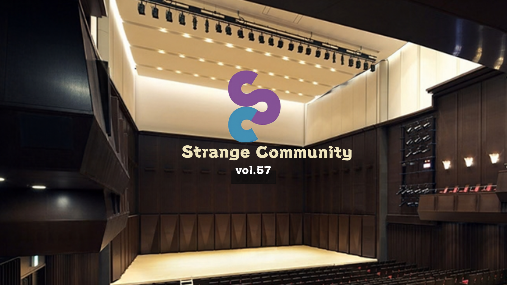
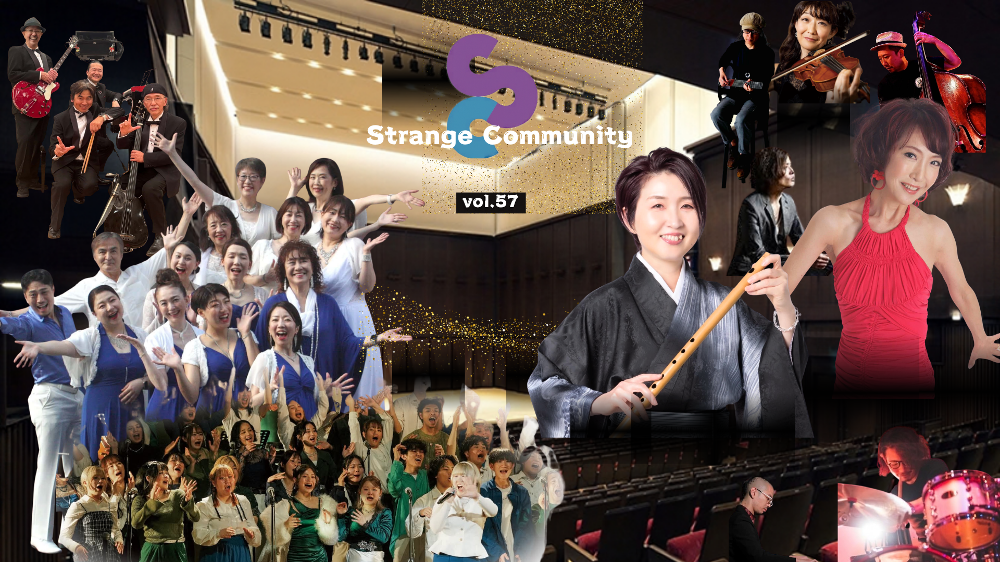
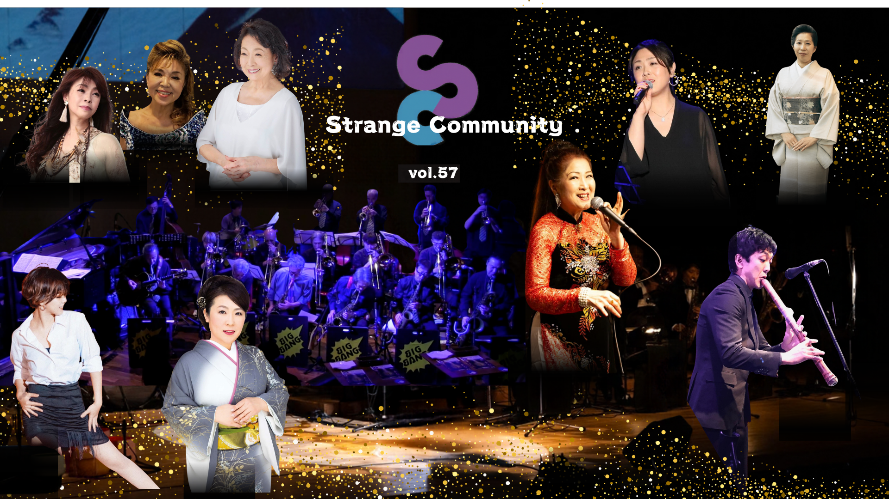
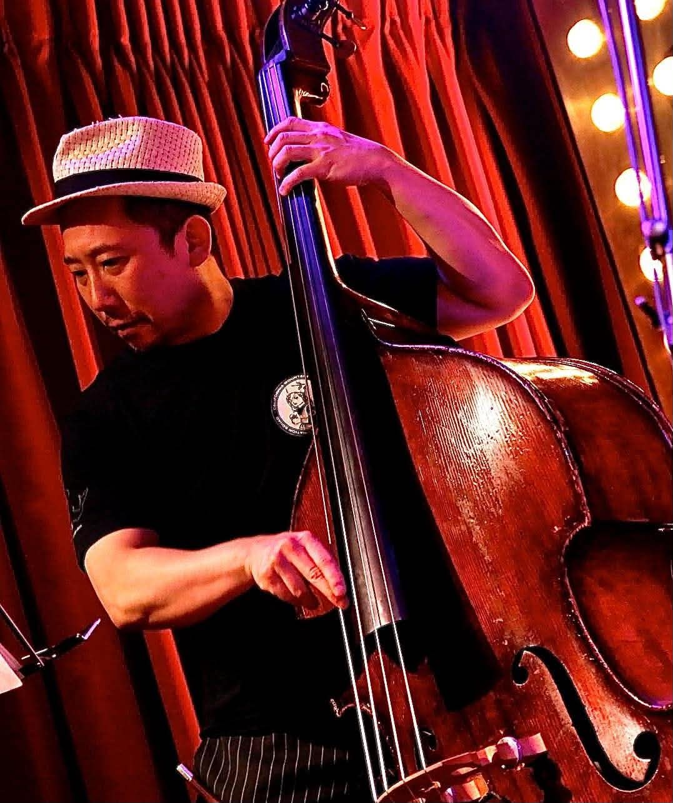
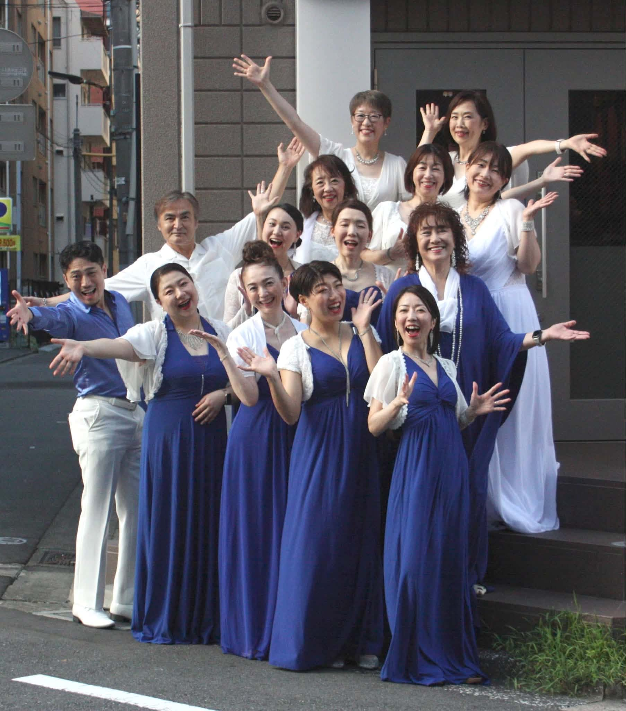
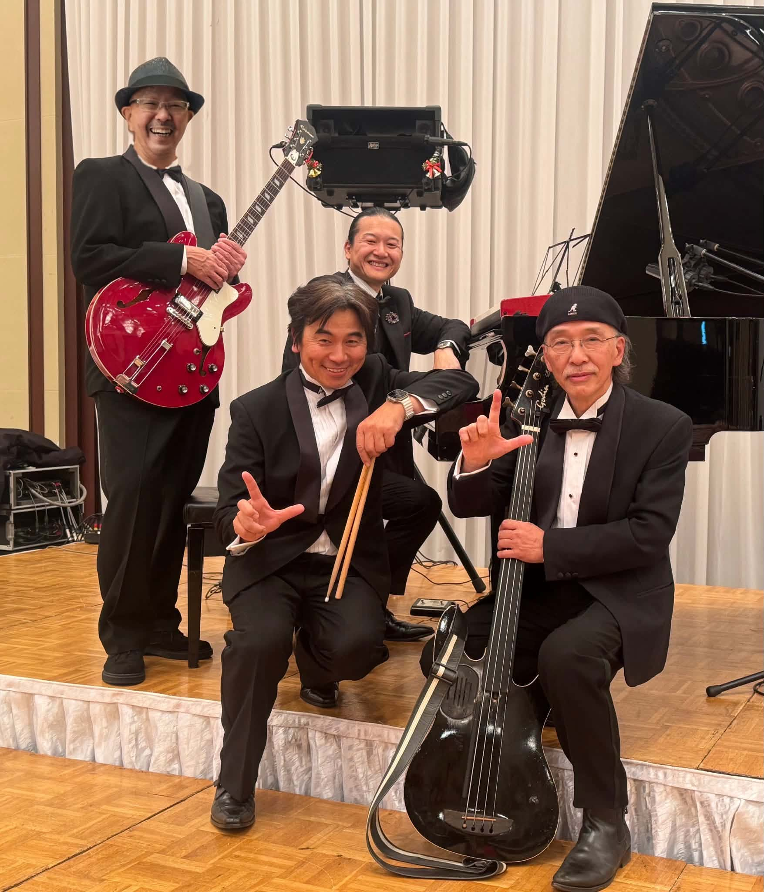
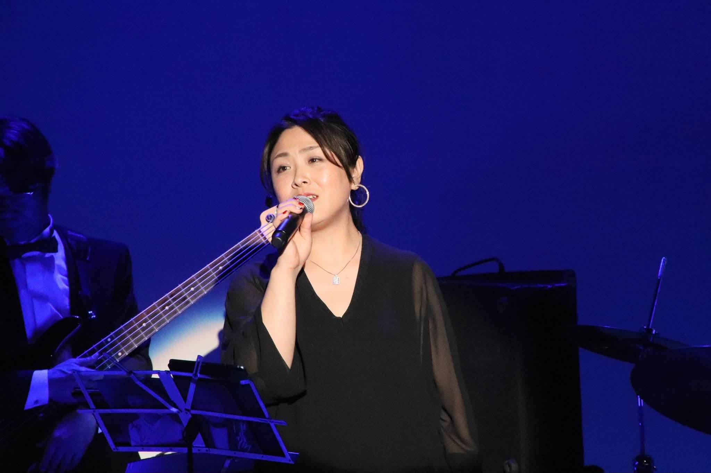
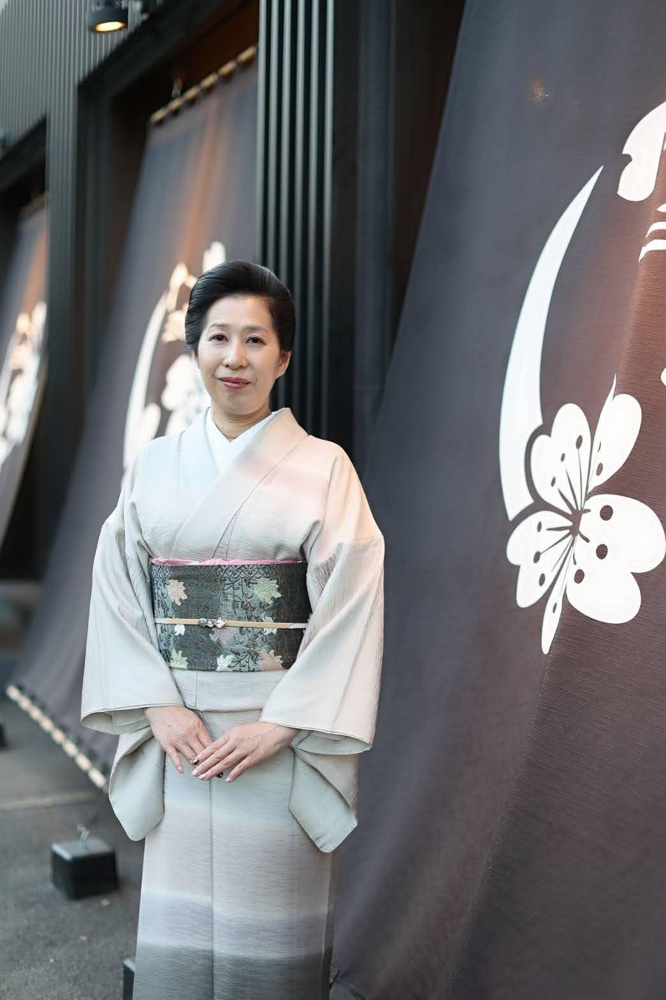
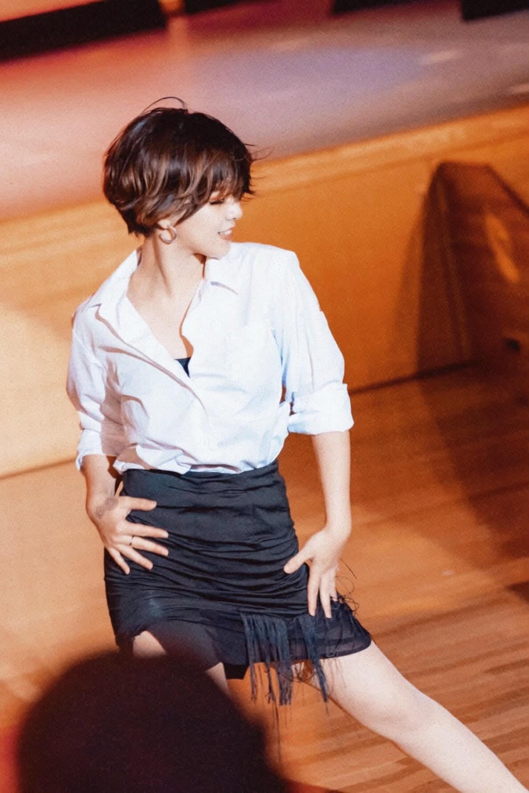

渋谷区文化総合センター大和田4F
さくらホール
昼公演
篠笛、ゴスペル、JAZZ、
多彩な音の響宴
TSM渋谷ゴスペルアンサンブル / 朱鷺たたらユニット / KUMIKO IIDA & MISTRAL / Radish Choir

渋谷区文化総合センター大和田4F
さくらホール
夜公演
迫力のビッグバンドと
豪華なシンガー陣＆ゲストで贈る
プレミアムな夜
山田壮晃 & ビッグバンオーケストラ / 有桂 / 田代美代子 / 石橋美彩 / 隅川真里 / 真由子 / ランデル洋子 / 沢村まみ / 小林鈴勘 / 愛柳香奈 / Noa Inoue / 一龍斎貞奈
ABOUT THE EVENT
趣の異なる昼夜2公演
STRANGE COMMUNITYは、さまざまな表現者が同じステージに集い、新しい出会いを生み出す音楽イベントです。
2026年11月11日、渋谷さくらホール。昼は多彩なアンサンブル、夜は華やかなビッグバンドショーをお楽しみください。
TICKETS & VENUE
昼公演のみ
前売り：一般 5,000円 / 学生 3,000円
当日：一般 5,500円 / 学生 3,500円
全日通し券（昼＋夜）
前売り：一般 8,000円 / 学生 5,000円
当日：一般 8,500円 / 学生 5,500円
昼公演は16:00頃終演予定です。終演後、夜公演への転換のため一度ご退場いただきます。全席自由席のため、全日通し券のお客様も夜公演のお席は再入場時に改めてお選びいただきます。
01 / DAY PERFORMANCE
昼の部
DAY STAGE
12:00 OPEN
12:25 START渋谷さくらホール
多彩なジャンルとゴスペル・アンサンブルが織りなす
華やかなステージ
12:25 START渋谷さくらホール
多彩なジャンルとゴスペル・アンサンブルが織りなす
華やかなステージ
01 12:30 START
TSM渋谷
ゴスペルアンサンブル
声が重なり、会場全体がひとつになる。心を揺らすゴスペルの響きを、昼公演の幕開けに。
GOSPEL ENSEMBLE02 13:20 START篠笛アンサンブル
朱鷺たたら
ユニット 篠笛
タカスギケイ g
吉本ヒロ per
03 14:10 STARTJAZZ / SOUL
KUMIKO IIDA
& MISTRAL
柴田奈穂 vln
川村健 p

塩田哲嗣 b河村亮 ds


04 15:00 START
Radish Choir
ディレクター
らいらかおる
らいらかおる
小畑智史 (p)
水口昌昭 (g)
五十川博 (b)
志田史貴 (ds)
02 / NIGHT PERFORMANCE
夜の部
NIGHT SHOW
17:45 OPEN
18:15 START渋谷さくらホール
山田壮晃 & ビッグバンオーケストラと
豪華ボーカル・ゲスト陣
18:15 START渋谷さくらホール
山田壮晃 & ビッグバンオーケストラと
豪華ボーカル・ゲスト陣
SPECIAL LIVE
山田壮晃
& BIG BANG
ORCHESTRA
with 有桂
重厚なホーンセクションと、豪華ボーカル・ゲスト。大人のためのダイナミックなビッグバンドショー。
Trumpet
田中哲也
浦田雄揮
松木理三郎
三上貴大
Trombone
大畠宏暢
花島英三郎
東條あづさ
牧瀬顕利
Tenor Sax
山田壮晃
皆川 亨
Alto Sax
宮﨑達也
町野正志
Baritone Sax
土田さとし
Piano
山白恭二
Bass
横山 裕
Guitar
笈沼健司
Drums
山下暢彦

Band Master山田壮晃
Featured Singer有桂
GUEST ARTISTS
夜を彩る、豪華シンガーと多彩なゲスト陣
田代美代子 vo
石橋美彩 vo
隅川真里 vo

真由子 vo
ランデル洋子 vo
沢村まみ vo
小林鈴勘 尺八

愛柳香奈 日舞
